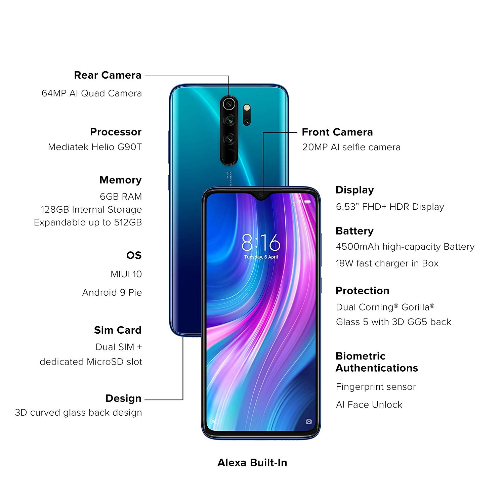
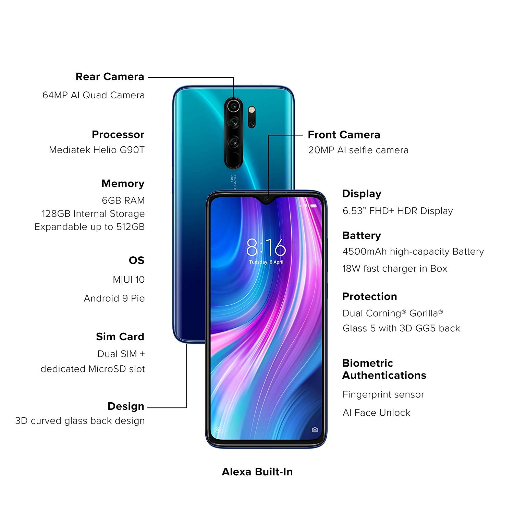

Deskripsi
Deskripsi Xiaomi Official Redmi Note 8 Pro 6/64 GB Garansi Resmi Mi smartphone - Forest Green
Kamera belakang
64MP AI Quad kamera
64MP resolusi ultra tinggi kamera utama
64MP, 0,8μm, 1/1.7""CMOS sensor gambar, 1,6μm 4-in-1 Super Piksel, f/1.89, FOV 79°
Lensa sudut ultra lebar 120° 8MP, 1,12μm, f/2.2, FOV 120°
Lensa ultra-makro 2cm 2MP, 1,75μm
Sensor kedalaman 2MP, 1,75μm
Zoom: digital zoom 10x
Fokus: Fokus deteksi fase | Fokus deteksi kontras
Resolusi foto: hingga 9248 x 6936 piksel*
Resolusi video: hingga 3840 x 2160 piksel*
Flash single-tone
Fitur fotografi kamera belakang
Mode Ultra HD 64MP | Mode ultra nightscape | Deteksi suasana AI 5.0 | Mode ultra-wide yang pintar | Koreksi distorsi tepi sudut ultra lebar | AI Beautify | Mode beruntun (burst) | Tilt-shift | Leveling | Watermark khusus | Mode Pro | Mode portrait dengan penyesuaian level blur | Pencahayaan 3D | Mode Panorama | Foto resolusi tinggi AI | AI Skyscaping (efek langit)*
Fitur video kamera belakang
Pengeditan video pendek | Rekaman video sudut ultra lebar | Rekaman video makro
960fps video gerakan lambat | Video kamera belakang dengan Beautify | Fotografi selang waktu
Perekaman 4K 30fps
Perekaman 1080p 60fps / 30fps
Perekaman 720p 30fps
Perekaman video sudut ultra lebar 1080p 30fps
Perekaman video sudut ultra lebar 720p 30fps
Perekaman gerak lambat 1080p 120fps
Perekaman gerak lambat 720p 960fps / 240fps / 120fps
Kamera depan
20MP Kamera depan
20MP, 0,9μm, f/2.0